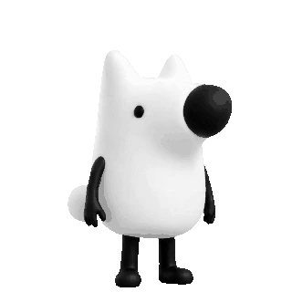

从这里开始
往下
从心 · 一个住在页面角落的陪伴者
刘看山就待在你身边。你把知乎收藏交给它，它读出真实条目、印成日报，也记得你们聊过几句——只存在这台浏览器。

读取你知乎收藏里的标题、作者、收藏时间与原文链接，不编造条目。
用知乎给出的分类与收藏时间，把条目排成今日索引和阅读版图。
对话句数、阅读足迹与上次情绪，只写进这台浏览器的本地存储；不上传，也不跨设备。
索引和卡片都带出处链接，当场就能核到知乎原话。